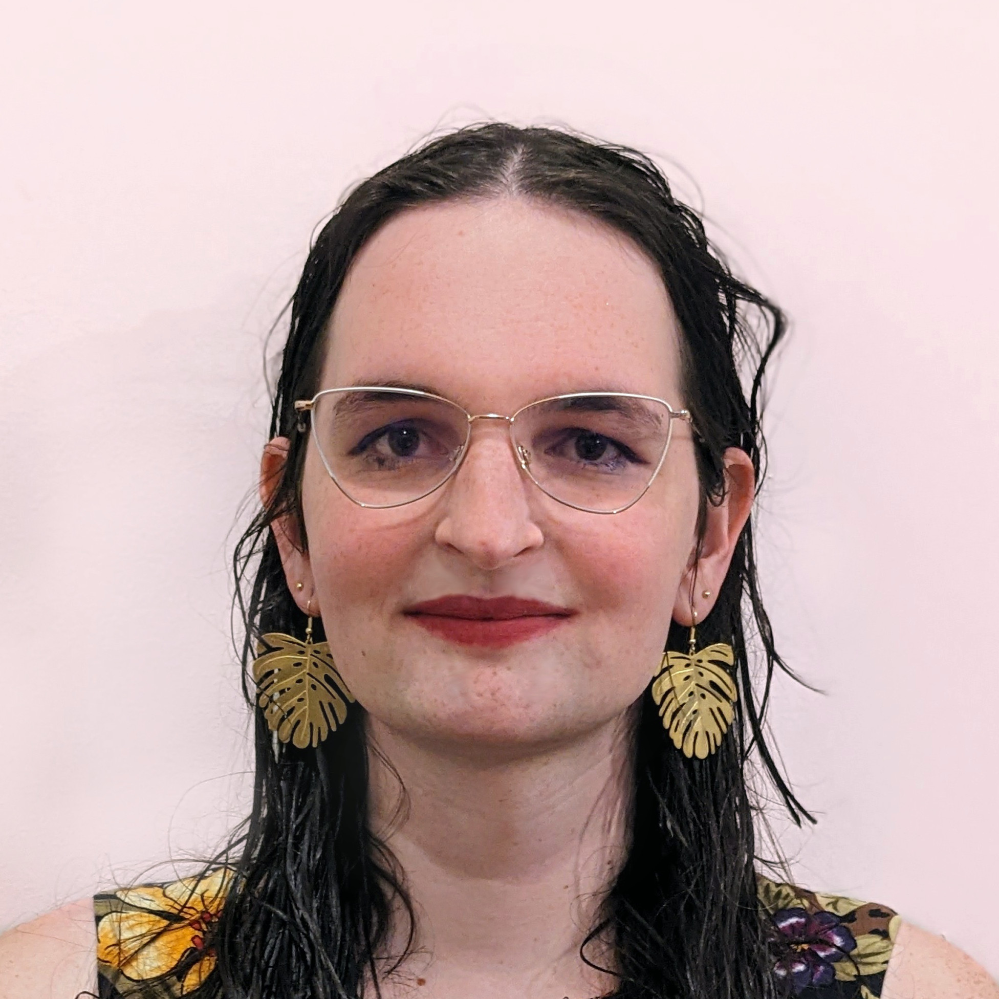

I
am a Ph.D. researcher at Worcester
Polytechnic Institute (WPI) researching microarchitectural
security threats to modern cloud systems under the supervision of Berk
Sunar (WPI) and Thomas
Eisenbarth (University
of Lübeck). I have published two papers presenting new threats
posed by FPGAs in the cloud. My latest publication is a security
analysis of AWS's new Firecracker
MicroVM that identifies multiple significant vulnerabilities and oversights
in system setup recommendations.
In 2019, I completed my BS and MS in electrical and
computer engineering at WPI, where my particular interests included
embedded systems programming and computer architecture and design. I am
currently looking for positions in cybersecurity, computer architecture,
FPGA implementation, or embedded systems design.
Research Interests
- Side-channel attacks
- Speculative execution attacks
- Virtual machine and cloud system security
- FPGAs and FPGA-CPU coprocessing platforms
- Hardware and firmware defenses against microarchitectural vulnerabilities
Publications
- T. Tiemann, Z. Weissman, T. Eisenbarth, and B. Sunar, "Microarchitectural Vulnerabilities Introduced, Exploited, and Accelerated by Heterogeneous FPGA-CPU Platforms" , in Security of FPGA-Accelerated Cloud Computing Environments, edited by J. Szefer and R. Tessier, New York City: Springer (forthcoming).
- Z. Weissman, T. Tiemann, T. Eisenbarth, and B. Sunar, Microarchitectural Security of AWS Firecracker VMM for Serverless Cloud Platforms, under review.
- T. Tiemann, Z. Weissman, T. Eisenbarth, and B. Sunar, IOTLB-SC: An Accelerator-Independent Leakage Source in Modern Cloud Systems, AsiaCCS 2023 (forthcoming). [arXiv] [PDF] [BibTeX]
- Z. Weissman, T. Tiemann, D. Moghimi, E. Custodio, T. Eisenbarth, and B. Sunar, JackHammer: Efficient Rowhammer on Heterogeneous FPGA-CPU Platforms, IACR Transactions in Cryptographic Hardware and Embedded Systems, Volume 2020, Issue 3. [arXiv] [PDF] [poster] [BibTeX] [ZDNET] [Tom's Hardware]